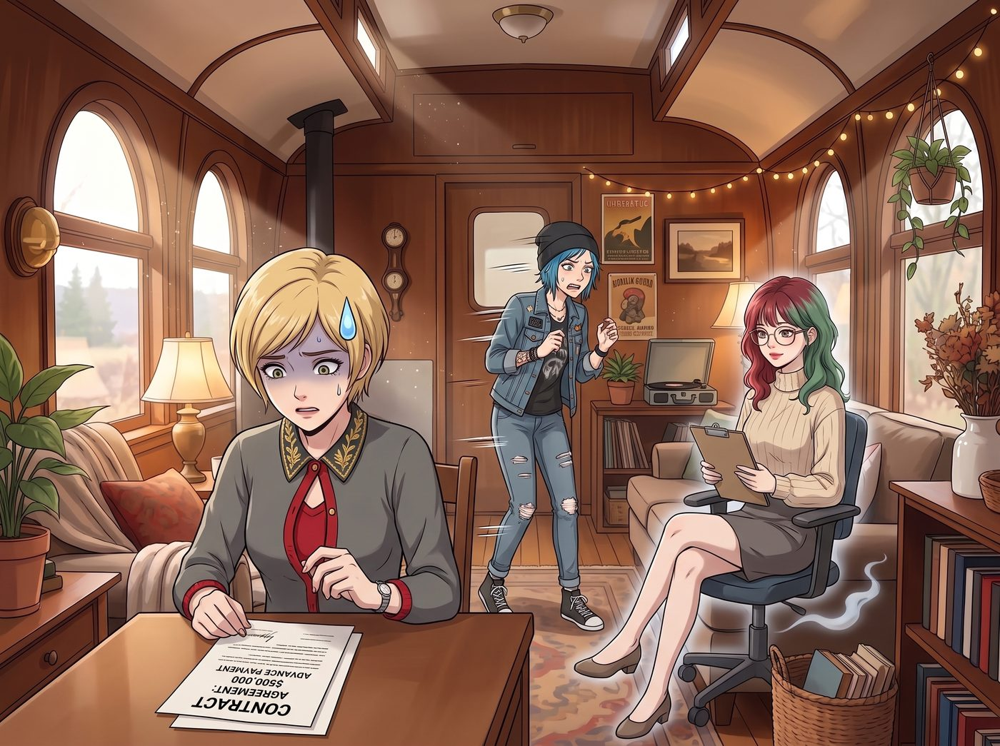
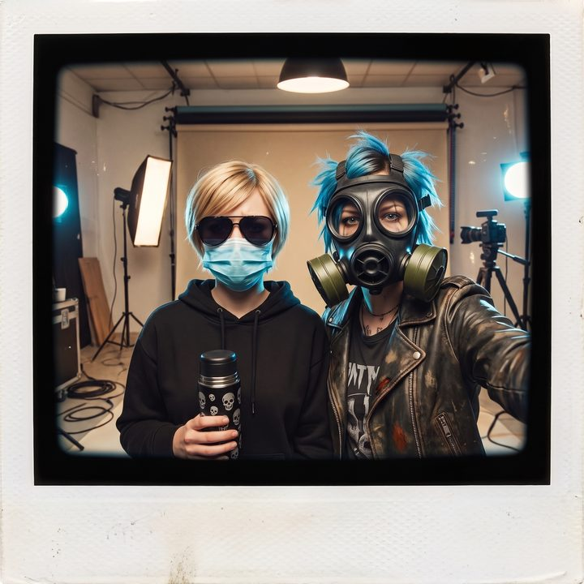

匿名出鏡條款


「我不能簽這個字！絕對不能！」
Victoria 看著桌上那份印著六位數金額的合約，彷彿在看一張死刑判決書，「如果我的臉被印在第五大道的廣告牌上，下個月我就會在上流社會的晚宴上成為全紐約的笑柄！他們會指著我說：『看啊，那是個為了幾萬塊去賣塑膠水杯的破產名媛！』」
「我也一樣！」Chloe 煩躁地在車廂裡走來走去，「阿卡迪亞灣的警察要是看到我的臉被貼在西雅圖公車的車廂上，絕對會重啟我當年的破壞公物案！老娘才不要為了這點錢去坐牢！」
就在兩位新晉「頂流網紅」準備寧可違約也要跑路的時候，Lily 幽靈般地滑著辦公椅轉了過來。
「兩位學姐，請不要讓情緒干擾了資本的累積。」
Lily 推了推圓框眼鏡，將一份剛剛列印出來的《合約附加條款》推到她們面前： 「我已經仔細研究了這份合約。它規定了妳們必須出鏡，但從來沒有規定妳們必須露臉。」
Lily 指著條款上新加的一行：「我向品牌方提出了一條『匿名出鏡條款』：兩位的面部不得出現在任何宣傳素材中，品牌也不得公開兩位的真實姓名。現在疫情還沒結束，人人都戴著口罩，戴著口罩拍廣告再正常不過。我已經跟對方的法務談過了，他們同意了。」
「意思是……我們可以戴口罩拍廣告？」Victoria 的眼睛瞬間亮了，彷彿抓住了救命稻草。
「不僅是口罩，您們可以進行全方位的『物理加密』。」Lily 乖巧地笑了笑。
【三天後，西雅圖市中心，廣告定妝照拍攝現場】
當二號車廂的兩位代言人走出更衣室時，品牌方的攝影團隊全體陷入了死一般的寂靜。
為了絕對防止被任何熟人認出來，Victoria 痛下決心，徹底捨棄了她那些帶有家族徽章的私人訂製真絲口罩，以及價值不菲的 Tom Ford 墨鏡。
她硬著頭皮，在街邊的 CVS 藥局買了一盒最廉價、最普通的藍色醫用外科口罩，甚至還從加油站花 4.99 美元買了一副土到掉渣的黑色塑膠蛤蟆鏡。
她將自己裹在一件毫無 Logo 的黑色連帽衫裡，大半張臉被廉價的藍色口罩和劣質墨鏡死死遮住。對一個老錢名媛來說，穿戴這些「平民工業垃圾」所帶來的心理創傷，簡直比讓她去街頭要飯還要深。她站在鎂光燈下，渾身都在因為品味受辱而微微發抖。
但跟 Chloe 比起來，Victoria 的裝扮簡直太過「日常」了。
Chloe Elizabeth Price 完美貫徹了她作為一個「廢土龐克」的極端審美。
她直接從自己的破傷風工坊裡，翻出了一個英國 SAS 特種部隊級別的、帶有兩個巨大過濾罐的重型防毒面具。
她穿著滿是機油的皮夾克，頭上戴著那個猶如生化危機反派般的防毒面具，整個面部被冰冷的黑色橡膠和防彈玻璃鏡片完全封死，只露出頭頂那一撮標誌性的、桀驁不馴的藍色短髮。
呼吸時，防毒面具還會發出那種猶如黑武士（Darth Vader）般沉重、極具壓迫感的嘶嘶聲。
「……妳確定我們是來拍戶外保溫杯廣告，而不是來搶劫銀行的嗎？」Victoria 戴著廉價墨鏡，壓低聲音咬牙切齒地問。
「閉嘴，大小姐。只要沒人能認出我的臉，我才不在乎這玩意兒有多重。」Chloe 隔著防毒面具，發出沉悶且充滿金屬質感的聲音。
就在兩人以為這種「極端不配合的遮醜布」會激怒金主爸爸，從而順理成章地終止拍攝時——
「太完美了！！！」
品牌方的年輕 CMO 突然在監視器後方爆發出了一陣狂熱的尖叫，激動得差點把手裡的咖啡掀翻。
「天哪！這簡直是天才般的視覺隱喻！！」CMO 衝過來，圍著她們兩眼放光，「一個戴著防毒面具、充滿末日廢土氣息的藍髮暴徒；一個戴著廉價口罩、彷彿在逃避都市監控的匿名駭客！
這完美契合了我們這款保溫杯『在有毒的現代社會中，保持絕對隔離與純粹』的核心理念！這就是我們想要的賽博龐克（Cyberpunk）加蠢朋克（Daft Punk）的神秘感！攝影師，快！把光調暗，給那個防毒面具打個冷色逆光！」
Victoria 和 Chloe 隔著墨鏡和防毒面具面面相覷。
「這些資本家的腦子到底裝的是什麼品種的屎？」Chloe 沉悶的聲音從過濾罐裡傳出，帶著深深的無力感。
「別問了。」Victoria 生無可戀地嘆了口氣，絕望地舉起了手裡那個畫滿骷髏頭的保溫杯，「只要沒人認出我是 Chase 家族的人，就算他現在讓我去扮演星際大戰裡的半獸人，我也認了。」
就這樣，這組充滿了末日求生感、防毒面具與廉價外科口罩交織的「神級代言照」，在全美各大街區的廣告牌上強勢登陸。
沒有人知道這兩個爆紅的「反消費主義網紅」到底長什麼樣子。她們越是隱藏，越是遮掩，粉絲們就越覺得她們酷到了骨子裡。
Max 站在拍攝現場的角落裡，看著閃光燈下被迫營業的「防毒面具怪客」和「廉價口罩駭客」，笑得差點握不住手裡的相機。
她舉起寶麗來，將這個荒誕的時尚大片拍攝現場記錄了下來。
相紙吐出，Max 在背面寫下： 『規則第 87 條：當妳試圖用疫情和防毒面具來掩飾身分、搞砸一切時，資本主義的濾鏡總能把它包裝成最前衛的賽博龐克藝術。雖然她們失去了在陽光下露臉的機會，但至少，這塊六位數美金的「遮醜布」足夠厚實。』